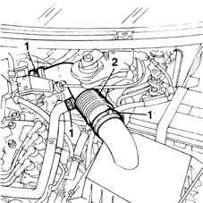

1048A32 sleeve from air cleaner to intake manifold - r + r
- Path
- Procedures > 10 ENGINE UNIT > 1048 ENGINE AIR SUPPLY CIRCUIT > 1048A VACUUM AIR CIRCUIT > 1048A32 sleeve from air cleaner to intake manifold - r + r
- Kind
- repair procedure (removal / refitting; the operation number is the code)
- Applies to
- engines: 1.6 16v; all production periods
- Interactive page
- https://sloeber94.github.io/elrnDB-fMltpl/en/#/2891257
Applies to: engines: 1.6 16v; all production periods
 Removing
Removing
 Refitting
RefittingOpen the bonnet lid.
1. Remove the connection collars.
2. Disconnect the sleeve from the throttle body, air cleaner and oil vapour recovery pipe, then remove.

Applies to: engines: 1.6 16v; all production periods
Refitting
RemovingCheck the air sleeve is undamaged.
Position the air sleeve and connect to the throttle body using a new collar.
Connect the air sleeve to the air cleaner casing using a new collar.
Connect the oil vapour recovery pipe to the sleeve using a new collar.
Close the bonnet lid.